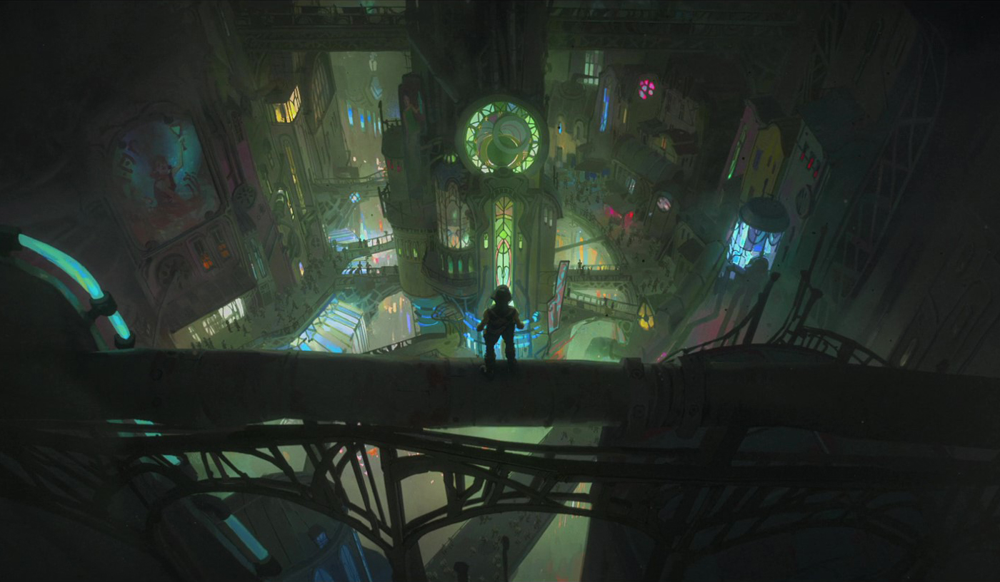
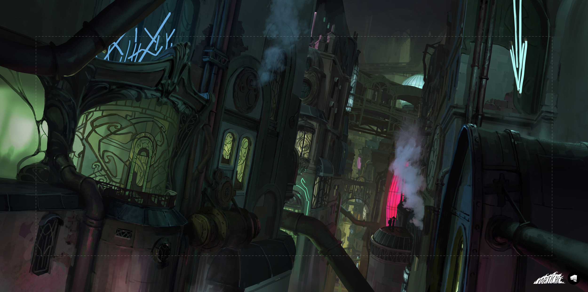
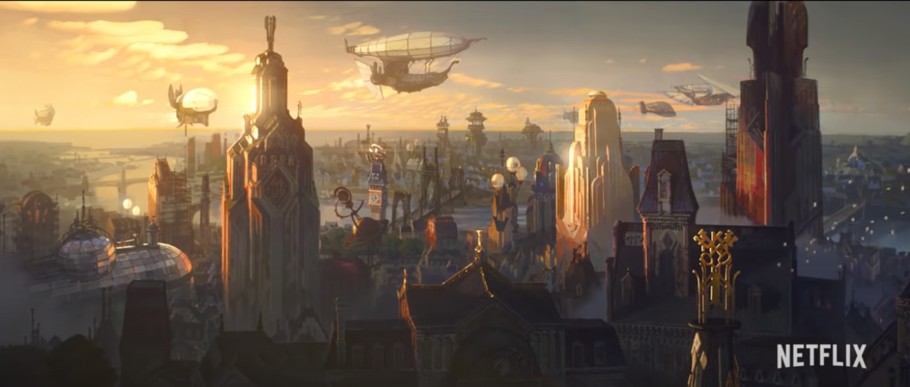

In the world of Arcane, the story is set in the cities of Piltover and Zaun. They are inextricably intertwined, but despite their close ties, the two regions frequently clash due to disparities in living conditions and customs.

Piltover, known as the “City of Progress” is located in the heart of the continent and on the verge of progress with increasing power and influence. It is a place where art, craftsmanship, commerce, and innovation coexist. Its power stems from the engines of trade and foresight, not from military might. The creation of Hextech gleams with the faint promise of a magnificent future, and two brilliant scientists are at the helm. Such potential comes at a price, and failure may be disastrous as politicians compete for power they don't fully comprehend. As unrest brews in the Undercity and instability threatens, Piltover's citizens must defend their future at all costs.
Zaun, commonly known as “The Undercity,” lurks in the shadows of progress, far beneath the floating machinery and towers of Piltover. In Zaun, stifled inventors are frequently welcomed for their unconventional research, but careless industry has turned large swaths of the city exceedingly hazardous, especially with the invention of Shimmer. There’s a thick layer of shouting and smoke in the air, and each alleyway has the promise of danger, desire...or both. But at its core, the city pulsates with hope, innovation, and an indomitable spirit that no opposing force can ever take away. As the age of hextech approaches, the citizens look up, desperation in their eyes, and wish for something more.
